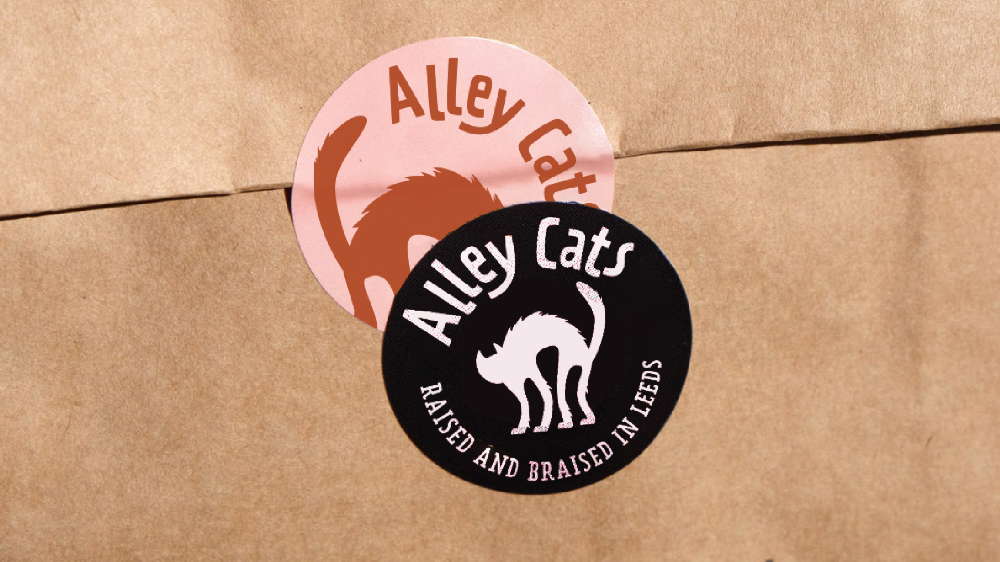
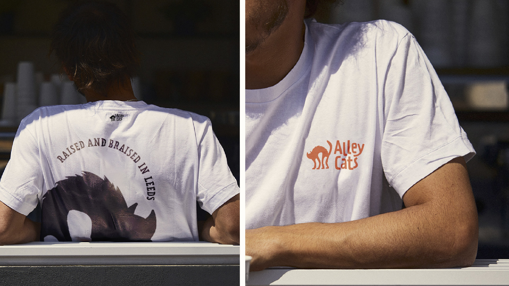
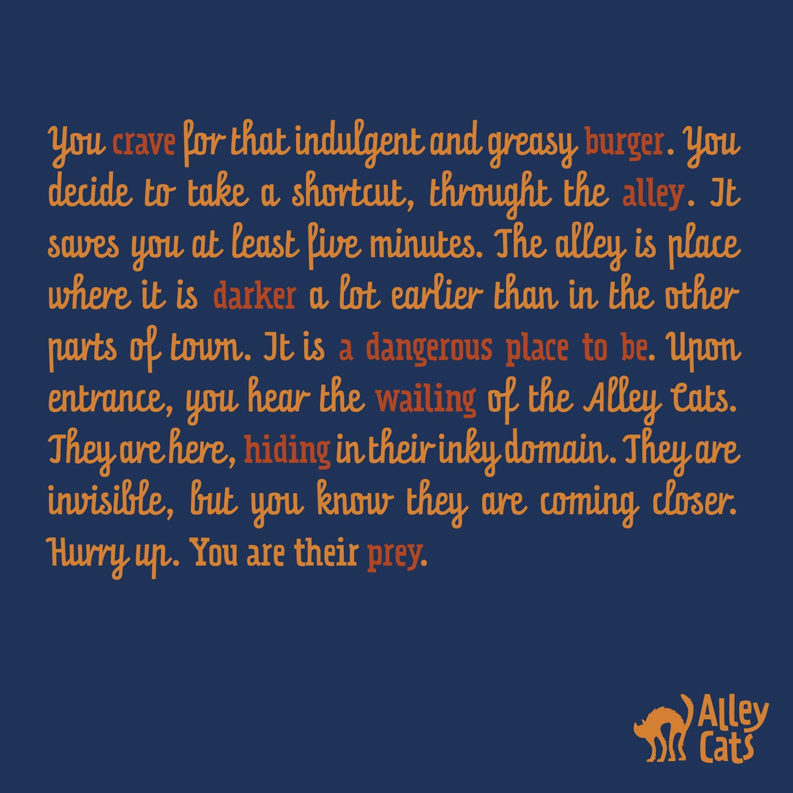
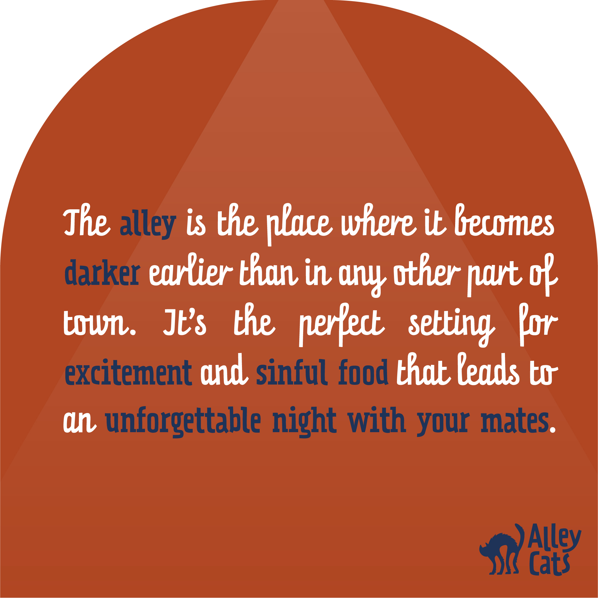
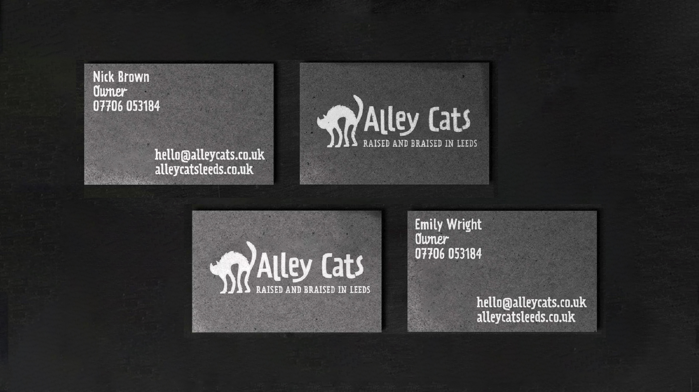
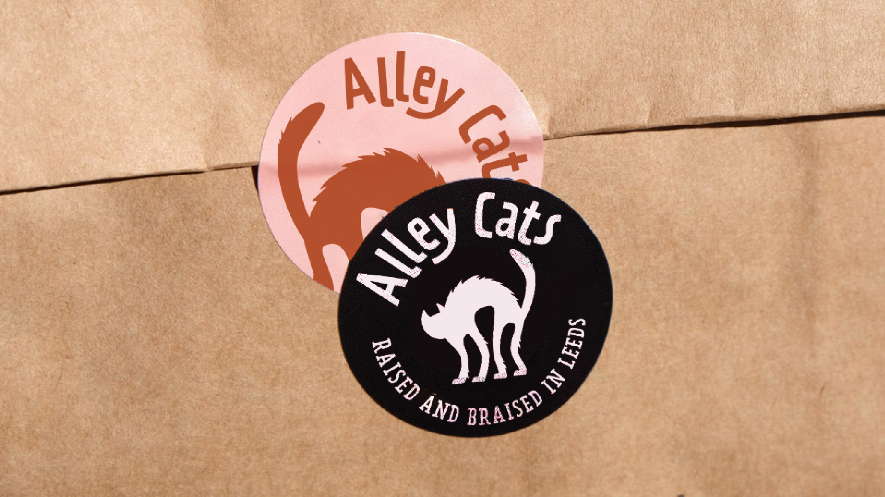
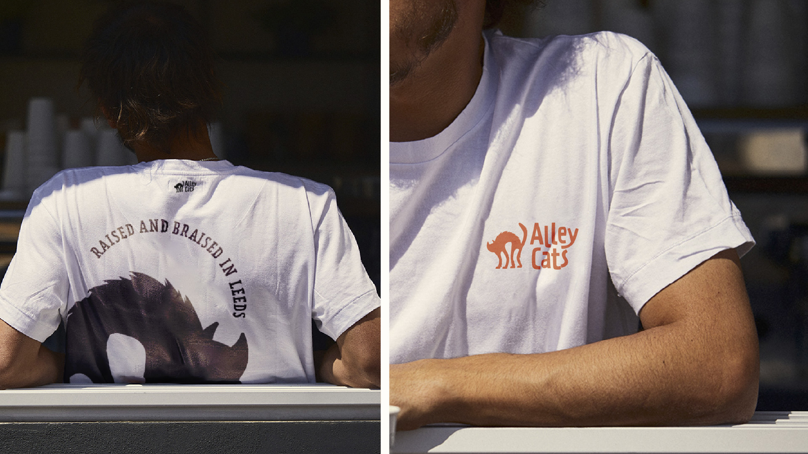
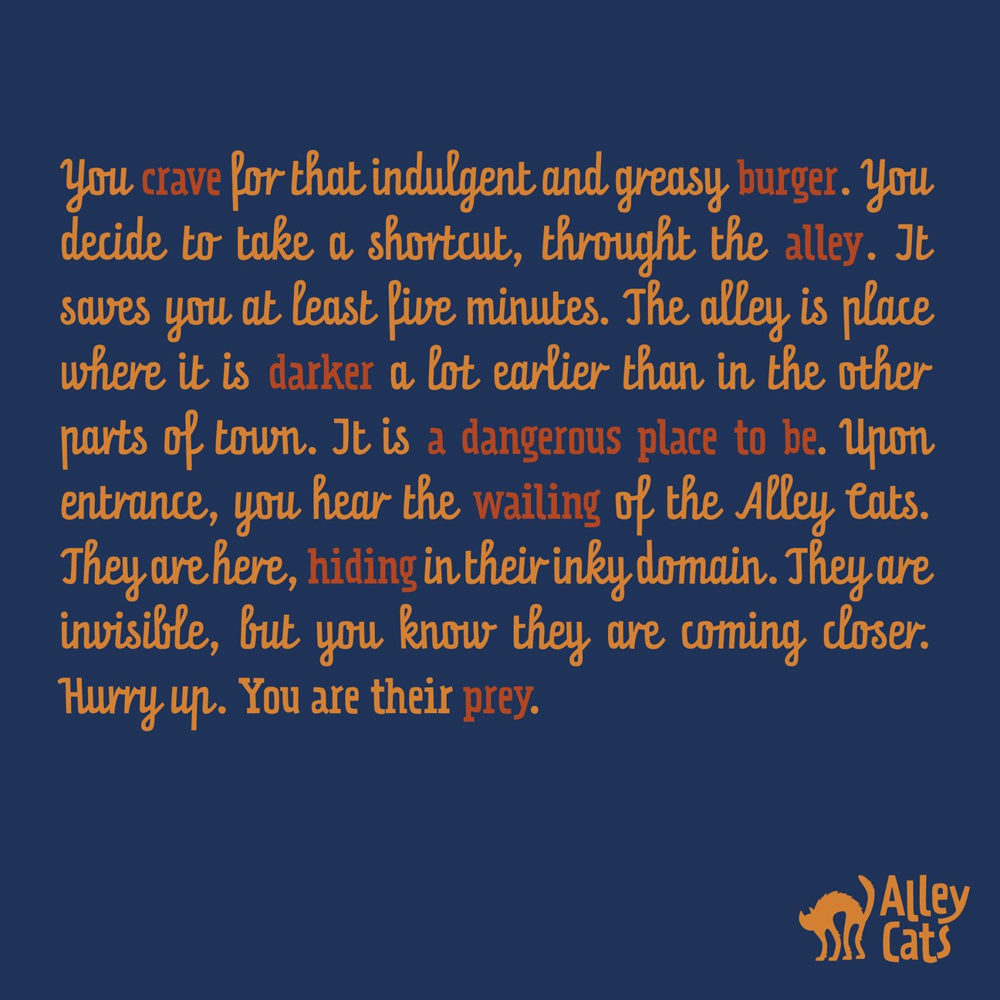
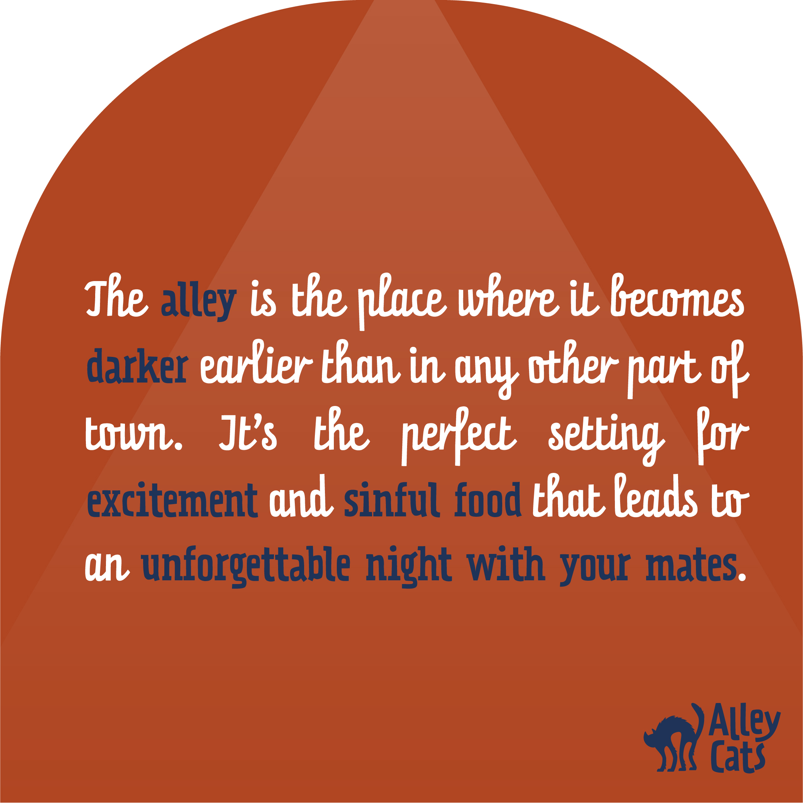
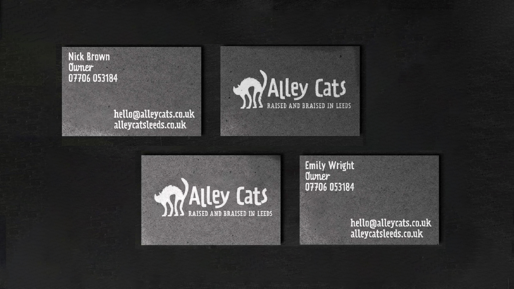

Embracing mystery, unveiling secrets
Redefining the burger joint experience in a saturated market. Or, how to stand out with an honest story.
But the real magic of Alley Cats lies in its mysterious alleyway location. The more you explore, the more secrets it reveals.
...
The Challenge:
redefining the burger joint experience in a saturated market
In today's bustling burger joint market, every city boasts a myriad of restaurants claiming to serve the "best burgers in town." However, Alley Cats, an establishment nestled within the enigmatic confines of an alleyway, sought to differentiate itself from the crowd. While initially hesitant to break away from their strong American vibes, complete with clichéd decor like the American flag and horse saddles, Alley Cats possessed a hidden magic that lay within its mysterious alleyway location. The more one delved into its depths, the more secrets it unveiled.
Venturing through the alley, one discovered a realm that grew increasingly familiar with each step, its environment offering hidden treasures to those bold enough to explore. As dusk settled, the alley cast the first shadows, inviting courageous souls to embrace its offerings. Within its unassuming facade, Alley Cats held not only stories to be told but also the potential for shortcuts leading to unexpected destinations. Here, self-consciousness had no place, and seriousness found itself playfully abandoned.
What we did:
infusing mystery and playfulness into the brand
Understanding the essence of Alley Cats, we embarked on a branding journey that would capture the allure of its hidden world while embodying a sense of excitement and fun. Inspired by the distinctive shapes and heights of each burger, we conceptualized unique icons and labels, subtly paying homage to the diverse ingredients and bun variations that determined their form. The stories we crafted came alive with a modified color palette drawn from the rich symbolism of the American flag.
To evoke the essence of alleyways, we developed a playful typographic style that mimicked the elongated shadows cast in those hidden corridors. Additionally, we introduced a captivating mascot—an alley cat embodying the spirit of the "great unknown," guardian of the secret alleys and watchful protector of the restaurant.
While Alley Cats didn't require extensive branding across multiple applications, we ensured that where it was essential, the design stood out prominently and immediately communicated the establishment's mysterious and playful nature.
 








